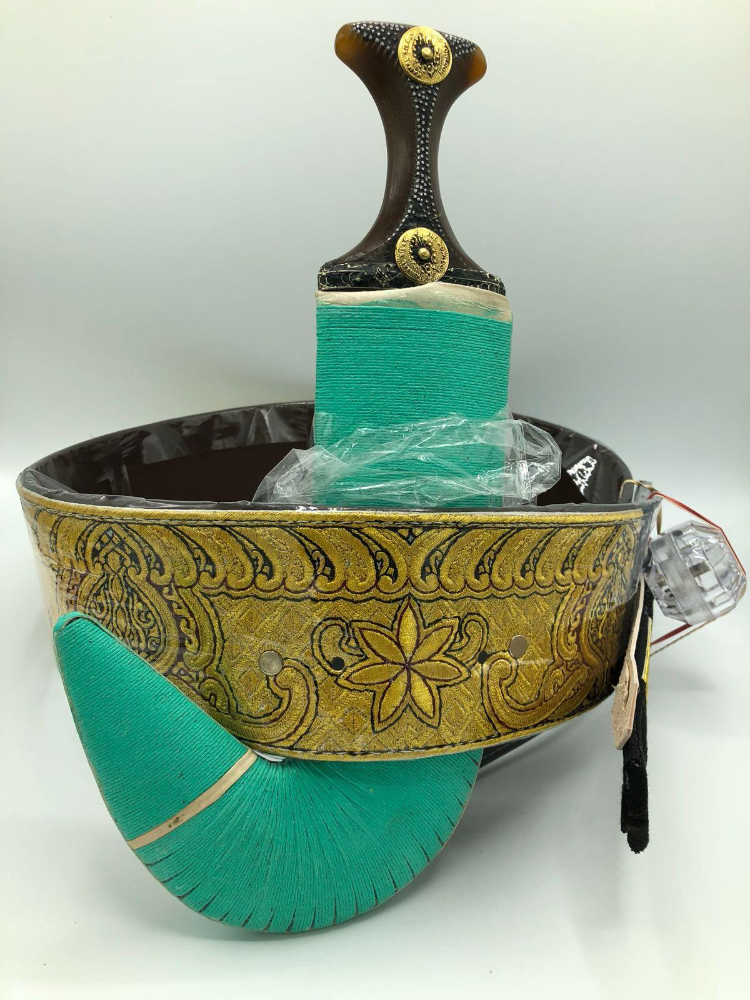
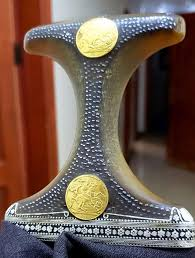
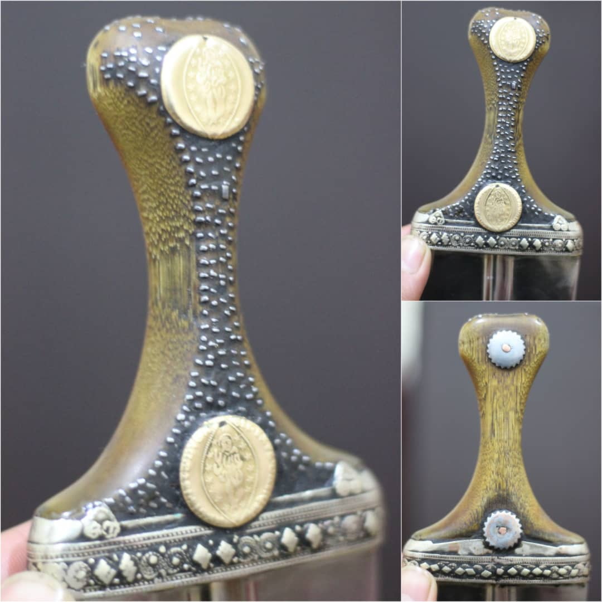

Janbiya iki kısımdan oluşur, birinci kısım kemer şeklindedir ve ikinci kısım hançerdir. Janbiya on
binlerce dolara mal olabilir
Birden fazla Janbiya türü vardır, bunlar hakkında daha sonra konuşacağız. Yemen'de her yerde Janbiya
takan insanları göreceksiniz.
Janbiya türleri
Sayfani

Bunun yaşı 400 ila 1500 arasında.Gergedan boynuzundan yapılmıştır, Bu yüzden Bunu en pahalı
tür.
Asadi

Gergedan boynuzundan yapılmıştır, ancak Sayfani gibi eski değil.